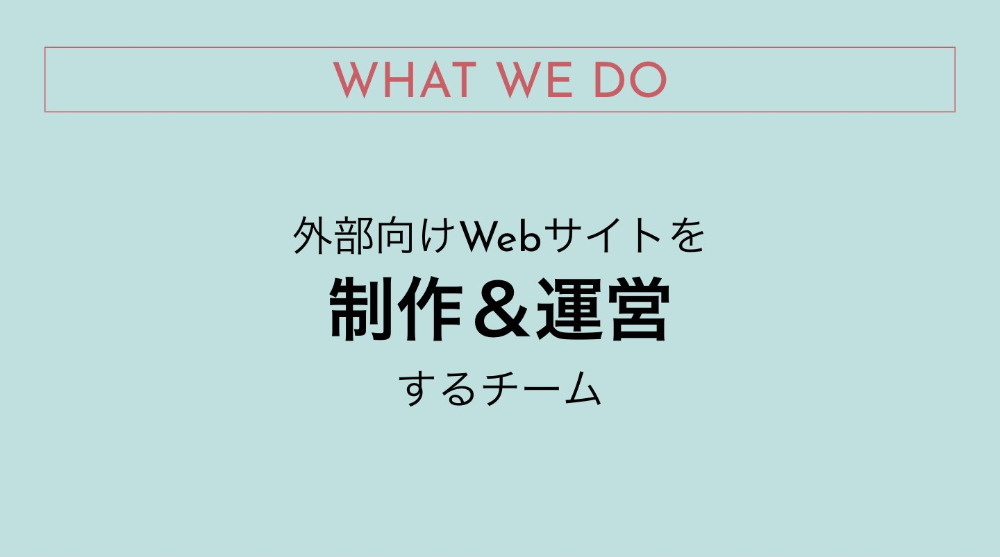
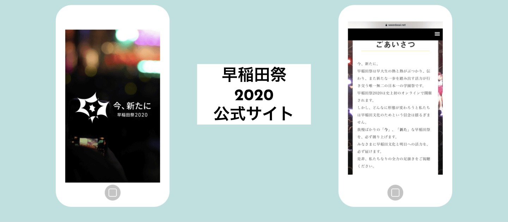
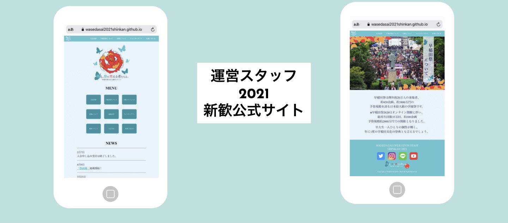

About us


WEBチームでは、主に2つのサイトを制作します！
①早稲田祭公式サイト
これは、Webチームの一番の大仕事になります。 「早稲田祭の顔」としての役割を果たしていて、とてもやりがいがあります。 日本一の学園祭とも呼ばれる早稲田祭の公式サイトで、非常に規模の大きいサイトです。
②早稲田祭運営スタッフ新歓公式サイト
毎年300人ほどの新規が入会する運スタの新歓公式サイトを制作します。 新規のみんなも一度は目にしてくれたかなと思います。 デザインからコーディングまで、もちろん全てWEBチームが担当しています。